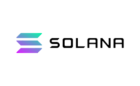
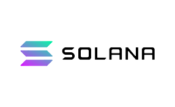

Altcoins
Altcoins sind Kryptowährungen, die eine Alternative zu Bitcoin
darstellen. Der Begriff leitet sich aus den Wörtern “alternative coin”
und wird verwendet, um jede Kryptowährung außer Bitcoin zu
beschreiben. Es gibt verschiedene Arten von Altcoins, die sich in
ihrer Funktionalität, ihrem Design und ihrer Zielgruppe unterscheiden.
Einige Altcoins basieren auf dem gleichen Code wie Bitcoin, andere
entwickeln völlig neue Technologien oder Konzepte. Einige Beispiele
für bekannte Altcoins sind:
-
Solana (SOL): Solana Coin ist die interne Kryptowährung der
Solana-Plattform, die eine schnelle und skalierbare
Blockchain-Lösung für Smart Contracts und dezentrale Anwendungen
(DApps) bietet. Solana verwendet eine innovative Kombination aus
Proof of Stake (PoS) und Proof of History (PoH), um Transaktionen in
nur wenigen Sekunden zu verarbeiten. Solana hat das Ziel, das
sogenannte “Blockchain-Trilemma” zu lösen, das besagt, dass jede
Blockchain nicht gleichzeitig dezentral, sicher und skalierbar sein
kann. Solana behauptet, alle drei Eigenschaften im gleichen Maße zu
erreichen.
-
Ethereum (ETH): Eine dezentrale Plattform für Smart Contracts und
dezentrale Anwendungen (DApps). Ethereum verwendet seinen eigenen
Proof-of-Work-Algorithmus namens Ethash und ermöglicht es,
verschiedene Token auf seiner Blockchain zu erstellen.
-
Cardano (ADA): Eine Kryptowährung, die sich auf das Internet der
Dinge (IoT) konzentriert. IOTA verwendet ein anderes Konzept als
Blockchain, das Tangle genannt wird. Tangle ist eine Art von DAG
(Directed Acyclic Graph), das keine Blöcke oder Transaktionsgebühren
hat.
 

Stablecoins
Stablecoins sind Kryptowährungen, die versuchen, ihren Marktwert an
eine externe Referenz zu binden. Das Ziel von Stablecoins ist es, die
Vorteile von Kryptowährungen, wie zum Beispiel Dezentralität,
Sicherheit und Transparenz, mit der Stabilität von traditionellen
Währungen oder anderen Vermögenswerten zu kombinieren. Es gibt
verschiedene Arten von Stablecoins, die sich in der Art und Weise
unterscheiden, wie sie ihre Wertbindung sicherstellen. Die häufigsten
sind:
-
Fiat-gedeckte Stablecoins: Diese Stablecoins werden durch reale
Währungen wie zum Beispiel Dollar oder Euro besichert. Beispiele
dafür sind USD Coin (USDC) oder Tether (USDT). Diese Stablecoins
sind relativ stabil, aber sie erfordern Vertrauen in den Emittenten
und den Verwahrer der Reserven
-
Krypto-gedeckte Stablecoins: Diese Stablecoins werden durch andere
Kryptowährungen gedeckt. Oft wird hier ein breiter Mix aus vielen
Kryptowährungen genutzt. Beispiele dafür sind MakerDAO (DAI) oder
Wrapped Bitcoin (WBTC). Diese Stablecoins sind dezentraler, aber sie
sind anfälliger für Kursschwankungen und Liquidationsrisiken.
-
Algorithmische Stablecoins: Diese Stablecoins werden durch keinen
Vermögenswert gesichert, sondern durch einen Algorithmus, der die
Geldmenge an die Nachfrage anpasst. Beispiele dafür sind Ampleforth
(AMPL) oder Terra (UST). Diese Stablecoins sind innovativ, aber sie
sind sehr experimentell und unvorhersehbar.
-
Rohstoff-gedeckte Stablecoins: Diese Stablecoins werden durch
Rohstoffe wie zum Beispiel Gold oder Öl gesichert. Beispiele dafür
sind Pax Gold (PAXG) oder Tether Gold (XAUT). Diese Stablecoins sind
wertbeständiger, aber sie erfordern ebenfalls Vertrauen in den
Emittenten und den Verwahrer der Reserven.
Memecoins
Memecoins sind Kryptowährungen, die auf Internet-Memes basieren. Sie
werden oft als Scherz oder aus Neuheitsgründen erstellt und nicht
durch ein ernsthaftes Projekt oder einen praktischen Anwendungsfall
untermauert. Einige Memecoins haben jedoch eine große Fangemeinde und
können hohe Kurssteigerungen verursachen.
-
Dogecoin (DOGE): Der erste und bekannteste Memecoin, der von einem
Shiba-Inu-Meme inspiriert wurde. Dogecoin wurde 2013 als Abspaltung
von Litecoin gegründet und hat seitdem viele Unterstützer, darunter
auch Prominente wie Elon Musk.
-
Shiba Inu (SHIB): Ein weiterer Memecoin, der sich als “das nächste
Dogecoin” bezeichnet. Shiba Inu wurde 2020 als Parody von Dogecoin
entworfen und hat eine eigene Blockchain namens ShibaSwap.
-
Pepe Coin ist eine Kryptowährung, die auf dem Internet-Meme Pepe the
Frog basiert. Pepe the Frog ist ein depressiver Frosch, der in
verschiedenen Comics und Memes zu sehen ist. Pepe Coin wurde im
April 2023 als Witz geschaffen, aber erholte sich schnell an
Popularität und erreichte einen Höchststand von über 400 US-Dollar1.
Pepe Coin hat keine feste Funktion oder Nutzen, sondern wird
hauptsächlich als Scherz oder aus Neuheitsgründen gehandelt. Um Pepe
Coin zu kaufen, brauchst du eine Ethereum-Wallet und einige ETH.
Dann kannst du ETH auf einer Börse wie Uniswap oder Bybit gegen
PEPE-Token tauschen.